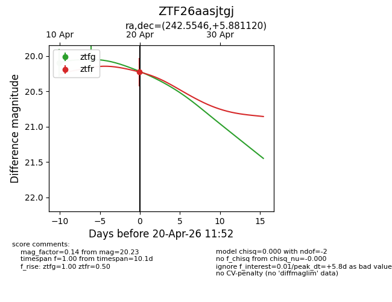
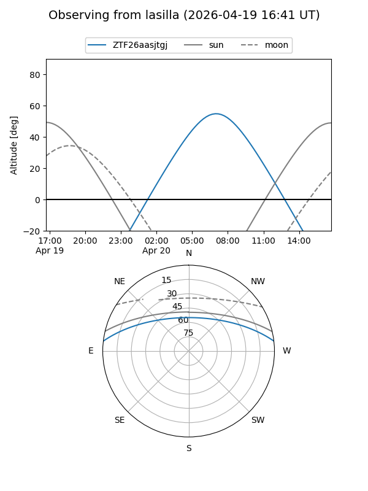
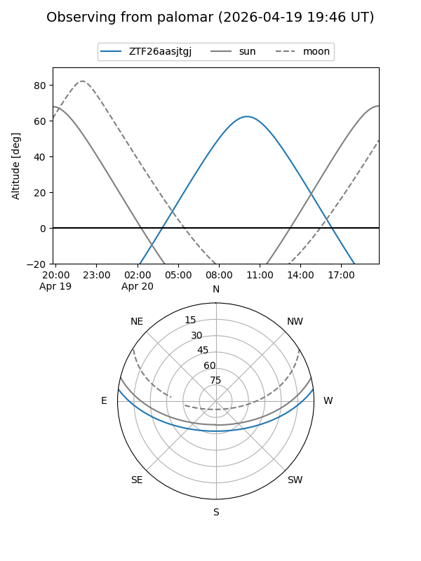
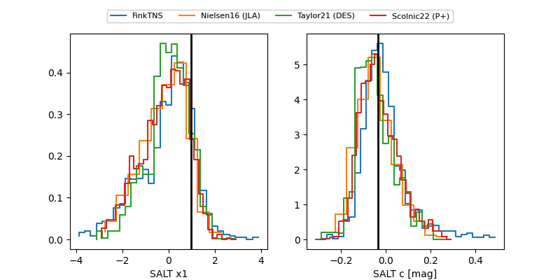

ZTF26aasjtgj
Target ZTF26aasjtgj at 2026-04-20 12:04
Aliases and brokers:
FINK: link
Lasair: link
ALeRCE: link
alt names
ZTF26aasjtgj (ztf,fink_ztf)
Coordinates:
equatorial (ra, dec) = 242.5546,+5.88112
equatorial (HMS+DMS) = 16:10:13.10,+05:52:52.03
galactic (l, b) = (18.0063,+38.27127)
Flags:
Photometry:
last ztfg=20.05, ztfr=20.23
2 ztfg, 1 ztfr detections
Lightcurve

Visibility


Additional plots
